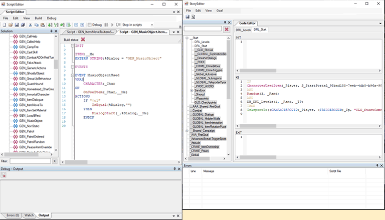

Scripting Overview
Scripting in The Divinity Engine 2 uses a language called Osiris. There are two main types of scripting (others not important to discuss here), one being item/character scripting and the other story scripting.
Item/character scripting is for when you want to apply custom behavior to specific items or characters you place in the game. The way it works is you make a script, then click on an object (character or item) and then add the script to that object and it will affect just that object. This is nice when you want to customize some general characters or items, like a script for particular types of boxes that create surfaces when attacked. You can place down some boxes in a level, click on them and add the script you wrote that makes them behave this way.
Story scripting on the other hand is useful for whole adventures as you use it to script more specific things. For example, let’s say you want to make a particular area where when the player enters they are ambushed by a pack of wolves. You wouldn’t be able to do this with a character/item script because this is a specific event you can't simply attach to a single object or something like that.
I will mainly focus on talking about story scripting because I admittedly don’t have enough knowledge and experience related to item/character scripting. If you want to know more about that, Larian Studios’ official wiki page is a great resource: https://docs.larian.game/Scripting
Osiris Story Scripting:
Osiris uses simply formatted code blocks that consist of an IF section for checking for an event, then an optional AND section for additional conditions or queries, and a final THEN section which has calls that tell the engine what to do. A simple explanation of what each code block does goes like this: “IF something occurs, AND these other conditions are met, THEN do something.”
Let's look at our earlier example and structure it in a code block; a pack of wolves ambush the player when the player enters an area:
IF
CharacterEnteredTrigger(_Character, [NameOfTriggerArea_IDString])
AND
CharacterIsPlayer(_Character, 1)
THEN
SetOnStage(Wolf1, 1);
SetOnStage(Wolf2, 1);
SetOnStage(Wolf3, 1);
What we have here is a code block that tells the engine to check when a character enters a specific trigger area and check if that character is a player, and if they are, then set 3 different wolf enemies on stage (which is like making them spawn).
How Should I Go About Scripting?
After some planning about what will happen in your story and after creating essential areas for your map, you can probably start scripting some things.
The reason I say this is you'll probably have a hard time story scripting if you don't have a physical space for the scripting to act out. This makes it a lot easier for me when I script, although you might have a different perspective.
What I mean by creating essential map areas is basic features of an area that are important for your scripted encounter. For example, if wolves are going to jump out of bushes while the player is proceeding down a path, you might want to have the path mapped out along with the bushes placed down where the wolves jump out from.